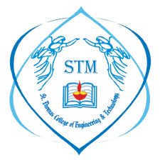
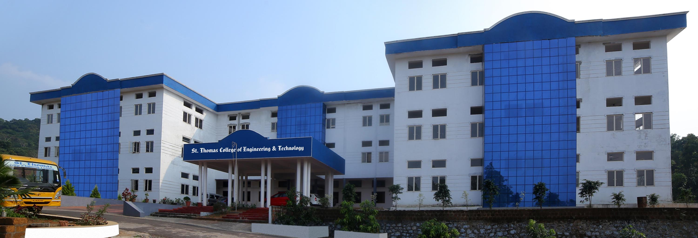

Welcome to STM
St Thomas Engineering College, Sivapuram, Mattannur was established by St Thomas Educational Society, Adoor with a view to impart high quality engineering education through systematic studies and efficient training. The college has a team of eminent faculty members and a disciplined atmosphere which help to promote a holistic approach to learning. There is a right balance of cognitive, conceptual, ethical, humane and spiritual growth as a whole. The institution within its short span of existence plans to be a centre of excellence in engineering education, by bringing out the young engineers devoted and socially committed.The college is approved by the All India council for Technical Education and affiliated to both Kannur University and A P J Abdul Kalam Technological University. The college has been established in the interior area of Malabar with a view to cater the needs of engineering education in the north-eastern of the Malabar area, especially to people who belong to the backward communities, tribal communities and immigrant communities, who are otherwise deprived of qualitative higher education in their area. Nevertheless the college is open to all meritorious students from all over Kerala to benefit the best and disciplined Engineering education it imparts.
Campus Life
St. Thomas College of Engineering & Technology is known for having a vibrant campus life. A student’s enrolment into the institution offers diverse opportunities to enhance their intellectual, emotional, physical, spiritual, and professional abilities. They are encouraged to enrich their educational and leadership skills through involvement in department associations at the college, not being content simply with pursuing a program of study. One such opportunity to grow is through participation in department associations and campus life activities. The understanding of technical concepts taught in the class is further strengthened when they are applied in fun activities and competitions. STM is committed to the philosophy of supporting the development of students and strives to achieve this goal through the implementation of a diverse array of campus activities, and events.
Why Choose Us
Anti-Ragging Support
Our college is supported by Anti-Ragging
Well Experienced Staffs
We provide the best faculties fot teaching
High Tech Class Room
We have High tech classrooms which will help the student get more experience.
Co Curricular Activities
National Service Scheme
The N.S.S. unit of STM has put in a lot of efforts all these years to meet these goals and has been successful to a great extent in doing the same.
Innovation and Entrepreneurship Development Centre
IEDC is an initiative of Kerala Startup Mission under Startup Bootcamp Scheme of Government of Kerala.
National Programme On Technology Enhanced Learning
A project funded by the MHRD to pave the way for introducing multimedia and web technology to enhance learning of basic science and engineering concepts.
Computer Socity Of India
Computer Society of India is the first and largest body of computer professionals in India. It is a non-profit professional society and meet to exchange views and share ideas.